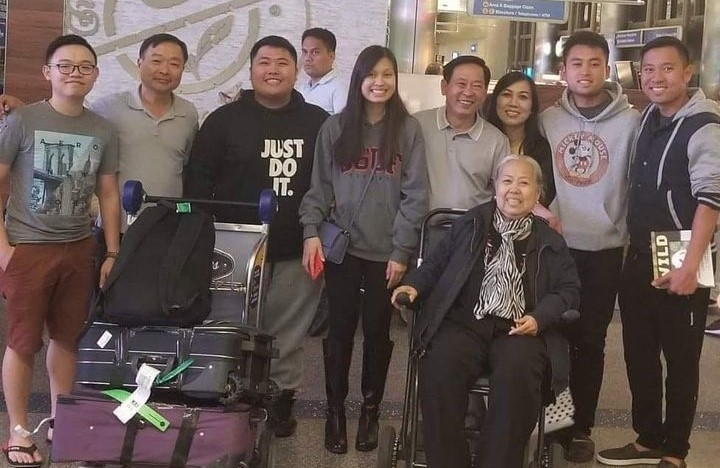

A Computer Scientist who is finding a way in his career
Quoc Ngo, the third on the left, is picking up his grandma at LAX Airport in 2018
A Brife Biography - To Be Updated
1995 - Quoc Ngo was borned on the Christmas Eve day this year in Bien Hoa - a big industrial city of Vietnam.
1999 - His parents divorced and Quoc has stayed with his mom since then.
2007 - Quoc was sent to a boarding school in Saigon because of his poor academic performance.
2013 - He finished his high school with a University Score of 20/30 (Vietnamese SAT). He was accepted by The Ho Chi Minh City University of Science, but his mom asked him to choose Royal Melbourne Institute of Technology (RMIT).
2014 - He went to the United Sates as an international student of Math and Science major.
2017 - Quoc graduated with a degree in Mathematics and Sciene, but he decided to change his major to computer science.
2019 - He finshed his Associate degree in Computer Science at Santa Ana college.
2020 - He continue to chase his career as a bachelor in Computer Science at California State University of Long Beach.
To be continue- Quoc's story has not ended here, more interested stories will be updated soon.